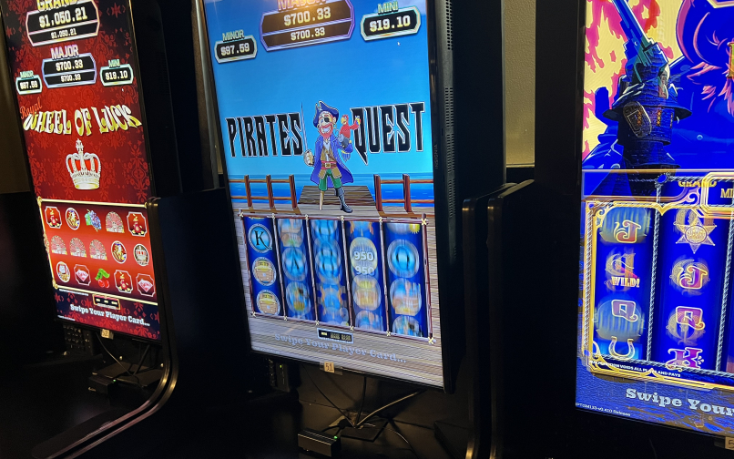
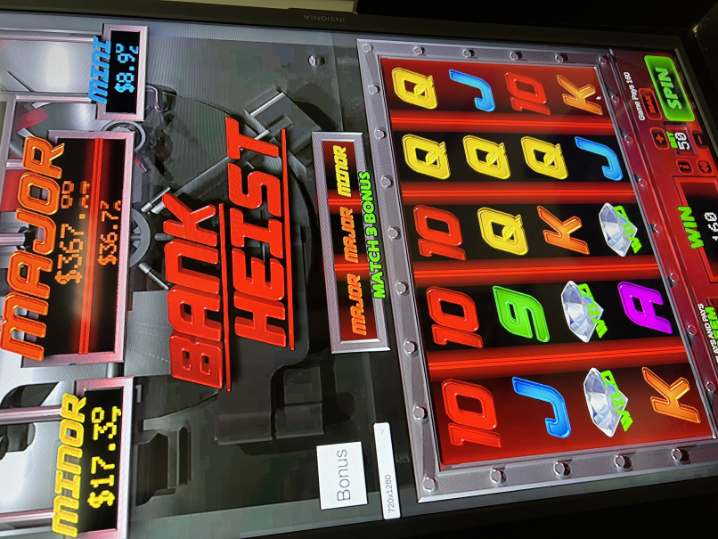
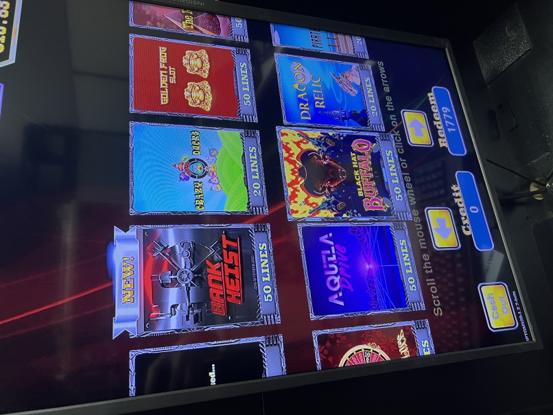
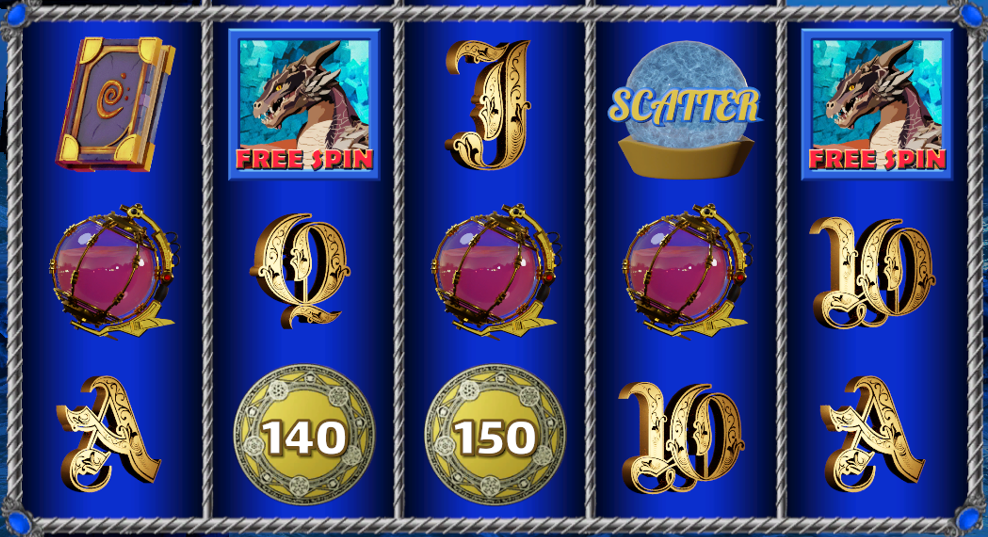

Slot Machine Series

Slot machines are one of the classical entertainment in casinos. I joined a startup project in 2021, and started my creation of slot games with modern player interaction and visuals. We have published 9 slot titles, and they are operated in local casinos across Texas. We encountered several challenges during development, but we have finally found a solution to each of them.
Challenge: Too many art assets
Slot machines have a lot of independent animations, which means each category will have a large amount of animation assets. It is important to create an effective pipeline for asset integration. I worked closely with the art department to figure out the need for each category, including UI, symbols, background and custom bonus. Then I created tools such as animation merging helpers, batch renaming tools, batch texture resizing tools etc. These tools made it possible for me to integrate a lot of assets from several artists within a reasonable amount of time.

Challenge: Old cabinets
The next challenge I had was with the limitation of the target hardware. The slot cabinets have really outdated hardware. At first, I had some trouble keeping the games at 60 fps. I profiled some games and located the bottleneck. The major problem was that when the reels were spinning, new symbols were spawned on the top and the old symbols were destroyed at the bottom. I implemented pooling for the symbols with animation swapping mechanics, and we were able to keep the games at 60 fps.
Challenge: Server authorization
In order to protect the players from malfunctions such as power loss or bugs, the slot machines have to be fully server authorized with rollback mechanism. We implemented our own network solution with 2 channels: A RestAPI channel for secured information and a UDP channel for realtime broadcasting. Then in the Unity client, I implemented a client for both channels to make sure the game keeps communication with the server, and refund to the players if malfunction happens.
Testing & Side Project
And of course, we did a lot of playtesting. Since we launched the games as live service, we received frequent feedback from the players and casino attendants. Working on different feedback has been great learning experience.

Working in a small team gives me some flexibility to work as an assistant artist. In one of our titles, I created 3D poker symbols in blender, and rendered the fracturing animation into sprite sheets. That way, we obtained some 3d rendering with the cost of a sprite sheet.
